if (!require(pacman)) install.packages("pacman")p_load(tidyverse)
Bernoulli and Binomial trials, the Normal distribution, standardization, and why sample means behave predictably
Same as every session: bootstrap pacman, then load the tidyverse.
if (!require(pacman)) install.packages("pacman")p_load(tidyverse)Week 1 covered descriptive statistics (mean, median, variance, standard deviation, IQR) and a first pass at ggplot2 on the Bundestag polling data. The lecture has since introduced probability distributions formally — we pick up straight from there and build those distributions in R, sticking to tidyverse throughout.
set.seed()Every r-prefixed distribution function (rnorm(), rbinom(), rgamma(), sample(), …) draws an actual random sample, so it returns a different result on every call. Their d/p/q-prefixed counterparts (dnorm(), pbinom(), qgamma(), …) instead compute a value straight from the distribution’s formula — deterministic, with no variance in the output no matter how many times they’re called. Random draws differ every run…
a <- rnorm(5)
b <- rnorm(5)
identical(a, b)[1] FALSE…unless we fix the seed right before each draw. This matters for homework and replicability in general — worth knowing before the many random draws coming up in this session.
set.seed(1234)
a <- rnorm(5)
set.seed(1234)
b <- rnorm(5)
identical(a, b)[1] TRUEIn practice, set.seed() is usually called once, at the very top of a script, rather than before every draw — that alone makes the whole script’s random output reproducible top to bottom. Reseeding before each individual step, like above, mainly matters when coding interactively and re-running chunks out of order.
A Bernoulli trial is a single yes/no event (playground: probabilityplayground.com/bernoulli). Imagine one legislator voting on a bill, with a pre-vote whip count putting the probability of a “yes” vote at 0.8:
dbinom(x = 1, size = 1, prob = 0.8) # yes vote[1] 0.8And therefore a “no” vote at:
dbinom(x = 0, size = 1, prob = 0.8) # no vote[1] 0.2x = number of successes (here: a “yes” vote)size = number of trials (1 legislator voting once)prob = probability of successsize = 1 is exactly a Bernoulli trial, so it’s convenient to wrap dbinom() in a dedicated helper — same computation, but the function name now matches the distribution we mean. From here on, every Bernoulli probability uses dbern() instead of spelling out dbinom(size = 1, ...). The math doesn’t change, only the function name — same two values, first the “yes” case:
dbern <- function(x, prob) {
dbinom(x, size = 1, prob = prob)
}
dbern(x = 1, prob = 0.8) # same as dbinom(x = 1, size = 1, prob = 0.8)[1] 0.8Then the “no” case:
dbern(x = 0, prob = 0.8) # same as dbinom(x = 0, size = 1, prob = 0.8)[1] 0.2Simulating one legislator’s vote: the same shortcut applies to random draws — rbern() wraps rbinom() exactly the way dbern() wraps dbinom(). One simulated vote is itself a single random draw from that same distribution:
rbern <- function(n, prob) {
rbinom(n, size = 1, prob = prob)
}
rbern(n = 1, prob = 0.5) # same as rbinom(n = 1, size = 1, prob = 0.5)[1] 1And 1000 independent single-legislator votes:
votes <- tibble(vote = rbern(n = 1000, prob = 0.5))Tallied with count() instead of table() — same tibble-first approach as Week 1’s mode section. This is the empirical count behind each outcome, the sample-based analogue of the PMF we computed by hand above:
votes |> count(vote)# A tibble: 2 x 2
vote n
<int> <int>
1 0 486
2 1 514Two legislators voting gives a Binomial with size = 2 — the sample space is {yes-yes, yes-no, no-yes, no-no}. In general, for trials at success probability , the number of successes has probability mass function
— exactly what dbinom() computes. Every probability distribution in R follows this same d/p/q/r naming pattern — once you know what each prefix means for one distribution, you know it for all of them (playground: probabilityplayground.com/binomial):
| Prefix | Concept | Formula | R ↔︎ math parameters | What it gives you |
|---|---|---|---|---|
d |
Probability mass at one outcome (PMF) | x, size, prob |
The one point of the PMF at | |
p |
Cumulative probability up to an outcome (CDF) | q, size, prob |
Everything at or below , summed | |
q |
Inverse of p: outcome at a target cumulative probability |
=alpha}"> | p, size, prob |
Which first reaches |
r |
Random draws from the distribution | n, size, prob |
Actual simulated outcomes, not probabilities |
Two argument names are worth double-checking every time: qbinom()’s first argument is p — the target cumulative probability, not the distribution’s own success probability (still supplied via prob) — and rbinom()’s first argument is n — how many draws to generate, not the distribution’s number of trials (still size).
Scaling up to a 100-member chamber at p = 0.5 (a toss-up vote), the PMF and CDF over every possible yes-vote count:
chamber_votes <- tibble(
yes_votes = 0:100,
pmf = dbinom(yes_votes, size = 100, prob = 0.5),
cdf = pbinom(yes_votes, size = 100, prob = 0.5)
)
chamber_votes# A tibble: 101 x 3
yes_votes pmf cdf
<int> <dbl> <dbl>
1 0 0.000000000000000000000000000000789 0.000000000000000000000000000000789
2 1 0.0000000000000000000000000000789 0.0000000000000000000000000000797
3 2 0.00000000000000000000000000390 0.00000000000000000000000000398
4 3 0.000000000000000000000000128 0.000000000000000000000000132
5 4 0.00000000000000000000000309 0.00000000000000000000000322
6 5 0.0000000000000000000000594 0.0000000000000000000000626
7 6 0.000000000000000000000940 0.00000000000000000000100
8 7 0.0000000000000000000126 0.0000000000000000000136
9 8 0.000000000000000000147 0.000000000000000000160
10 9 0.00000000000000000150 0.00000000000000000166
# i 91 more rowsdbinom(), pbinom(), qbinom() and rbinom() all at once, visually: dbinom() traces the bars (we never connect them with a line — the outcome space is discrete, there is no such thing as 2.5 yes votes), pbinom() is the highlighted area’s running total, qbinom() finds the boundary from a cumulative probability, and rbinom() draws actual random outcomes. k_ref = 55 here is just an arbitrary reference point to show all four at once.
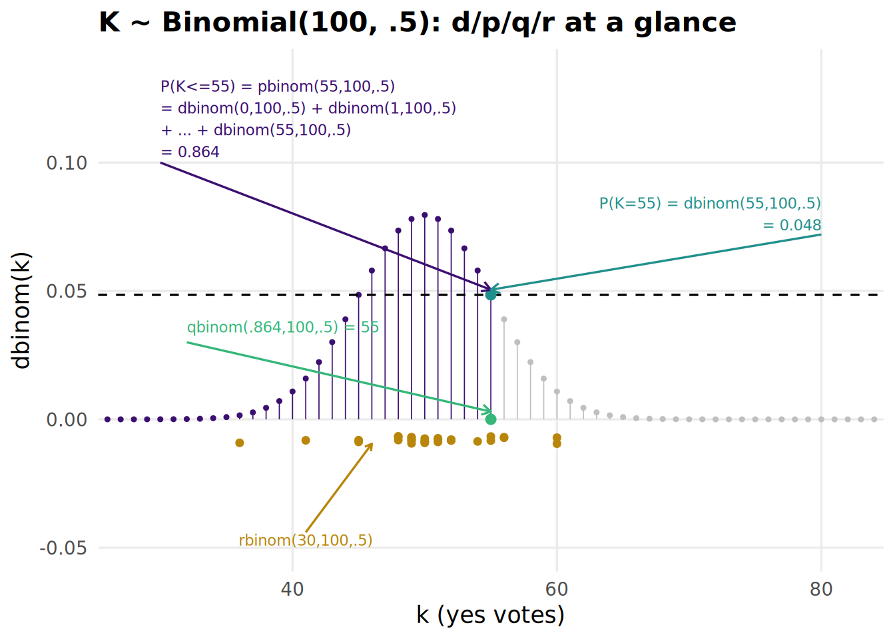
Zooming into a small, hand-checkable case — two legislators, size = 2. Each possible vote count has its own PMF value:
dbinom(x = c(0, 1, 2), size = 2, prob = 0.5) # exactly 0, 1, 2 yes votes[1] 0.25 0.50 0.25How likely is at most one yes vote?
pbinom(q = 1, size = 2, prob = 0.5) # 0 or 1 yes votes[1] 0.75pbinom() is the CDF, so the probability of more than 1 yes vote is either 1 - that, or lower.tail = FALSE:
1) = 1 - P(K <= 1)">
1 - pbinom(q = 1, size = 2, prob = 0.5)[1] 0.25pbinom(q = 1, size = 2, prob = 0.5, lower.tail = FALSE)[1] 0.25Which vote count corresponds to the 75th percentile of outcomes?
= alpha}, quad alpha = 0.75">
qbinom(p = 0.75, size = 2, prob = 0.5) # smallest k with P(K<=k) >= .75[1] 1Five simulated two-legislator outcomes:
rbinom(n = 5, size = 2, prob = 0.5) # 5 simulated two-legislator outcomes[1] 1 0 0 0 1A summit chair invited 120 delegates, each independently having an 85% chance of actually showing up. The venue comfortably seats 100. What’s the probability that more than 100 delegates actually show up?
100) = 1 - P(K <= 100), quad K tilde.op "Binomial"(120, 0.85)">
1 - pbinom(q = 100, size = 120, prob = 0.85)[1] 0.6586167This is the same “more than 100 people show up” question as a binomial process — 120 independent trials, each showing up with probability 0.85. Plotting the CDF across every possible attendance count:
summit_cdf <- tibble(
attendees = 0:120,
cdf = pbinom(attendees, size = 120, prob = 0.85)
)
summit_cdf |>
ggplot(aes(x = attendees, y = cdf)) +
geom_point(size = 0.8) +
labs(
title = "CDF of attendance (n = 120 invited, p = 0.85)",
x = "Delegates showing up",
y = "Probability"
) +
theme_intror()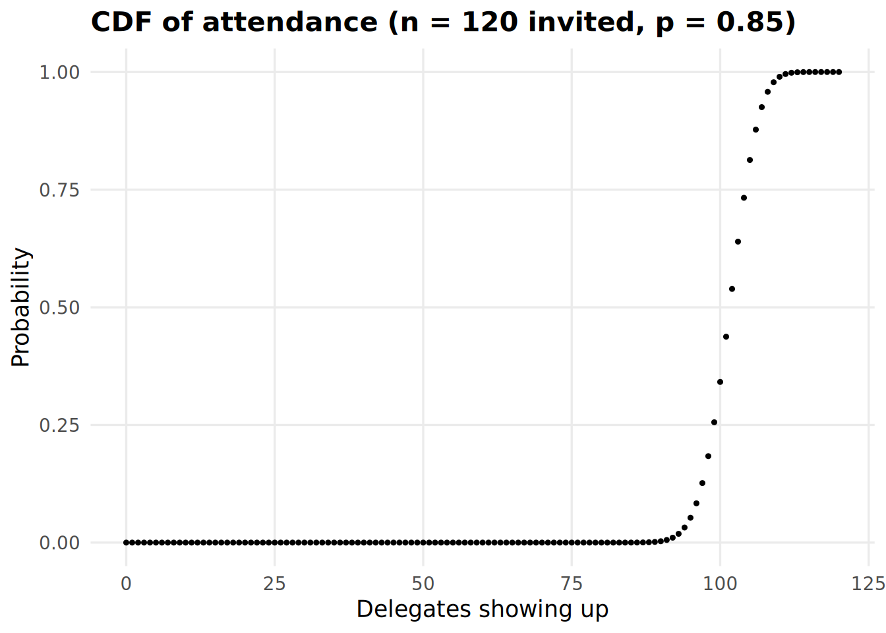
The Normal’s four prefixes — d, p, q, r — work exactly like Binomial’s, just with a continuous in place of a discrete (playground: probabilityplayground.com/normal). Its PDF and CDF:
tibble(
x = seq(-4, 4, by = 0.01),
density = dnorm(x)
) |>
ggplot(aes(x = x, y = density)) +
geom_line() +
labs(
title = "PDF of the standard Normal N(0, 1)",
x = "x",
y = "f(x)"
) +
theme_intror()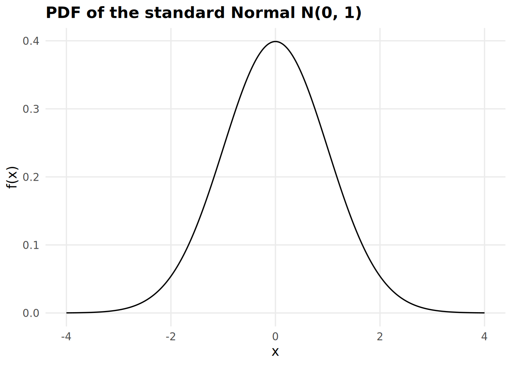
Inverting the CDF returns an -value instead of a probability. Worth anchoring the walkthrough on a value you already know from countless 95%-CI calculations — “1.96” is nothing more than qnorm()’s answer to “which has 97.5% of the mass below it?”, worth deriving and storing instead of memorizing:
crit_975 <- qnorm(p = 0.975, mean = 0, sd = 1)
crit_975[1] 1.959964Reading probabilities off that curve — the chance of landing at or below that same value:
pnorm(q = crit_975, mean = 0, sd = 1)[1] 0.975And its complement, landing above it:
1.96) = 1 - P(X <= 1.96)">
1 - pnorm(q = crit_975, mean = 0, sd = 1)[1] 0.025q() isn’t limited to 97.5% — any target probability works, e.g. which value has 30% of the mass below it?
qnorm(p = 0.3, mean = 0, sd = 1) # value below which 30% of the mass lies[1] -0.5244005And drawing 20 actual random values from the distribution:
rnorm(n = 20, mean = 0, sd = 1) [1] -0.6886715 0.1701978 0.5944834 -0.8150327 -2.8643468 0.9538235 0.6152848 -0.7008707 -1.0736613 -0.2999912
[11] 0.1081066 0.7232008 1.3900951 -0.8488834 0.2907228 1.3341760 -0.9013422 -0.2227634 -1.7714680 0.2874223Plotting the standard Normal’s PDF and CDF — and dbinom()/pbinom()/ qbinom()/rbinom()’s continuous counterparts, all at once: the shaded area is pnorm(), its boundary height is dnorm(), the boundary’s x-position is qnorm(), and the orange dots below are actual rnorm() draws.
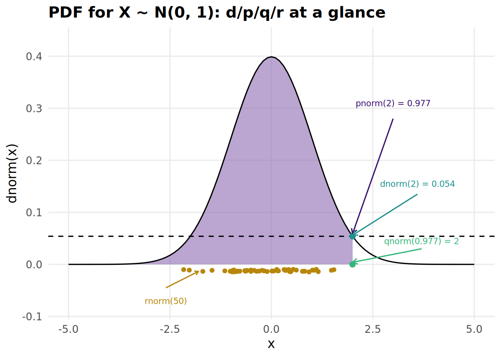
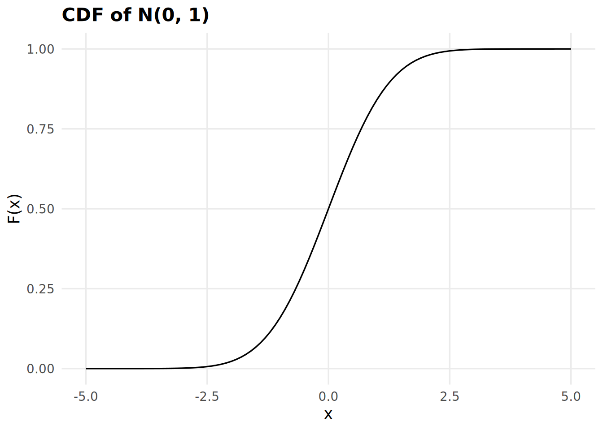
A different mean and sd shifts and stretches the same curve.
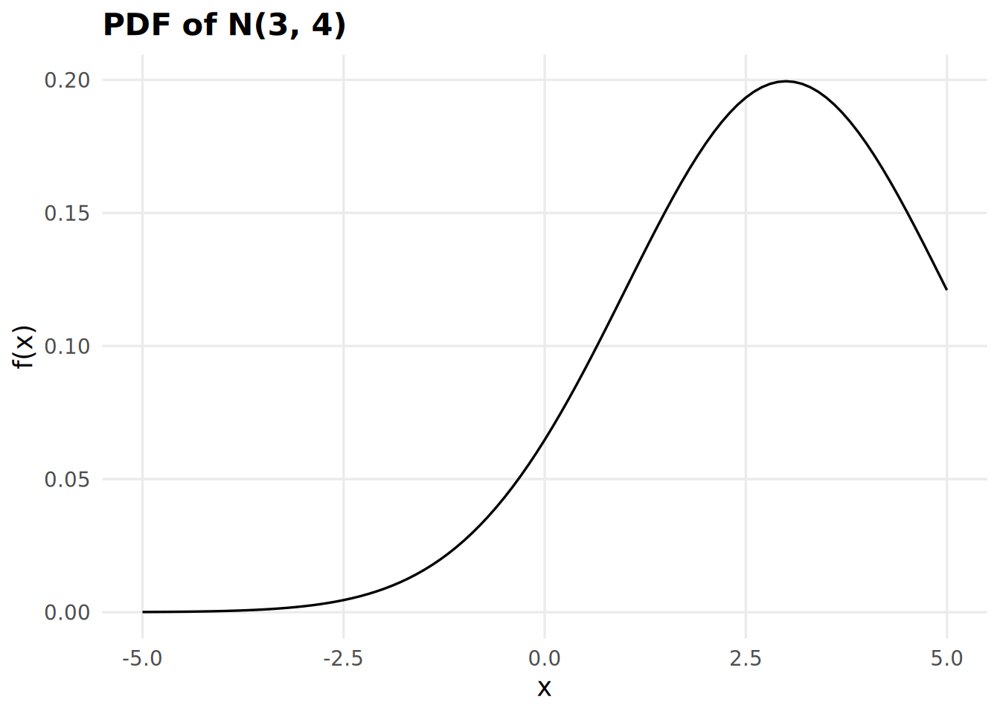
For a population with mean and variance , the sampling distribution of the mean approaches as grows — regardless of the population’s own shape. Zooming out from any one summit: imagine every delegate who’s ever attended one of these annual conferences, with a true average age of 32 (sd 5) — we never get this in practice, an organizer only ever surveys whoever’s in the room at a given session. The trials below repeat that batch-survey process at different sample sizes and on two differently-shaped populations, to see how closely the simulated sampling distribution matches the CLT’s prediction:
population_size <- 1000
n_batches <- 100
delegate_ages <- rnorm(population_size, mean = 32, sd = 5)
tibble(age = delegate_ages) |>
summarize(
mean_age = mean(age),
var_age = var(age)
)# A tibble: 1 x 2
mean_age var_age
<dbl> <dbl>
1 32.0 23.0The population itself, histogram and density together:
tibble(age = delegate_ages) |>
ggplot(aes(x = age)) +
geom_histogram(aes(y = after_stat(density)), bins = 30, fill = course_primary, alpha = 0.4, color = NA) +
geom_density(linewidth = 0.8) +
labs(
title = "Population distribution of delegate age",
x = "Age",
y = "Density"
) +
theme_intror()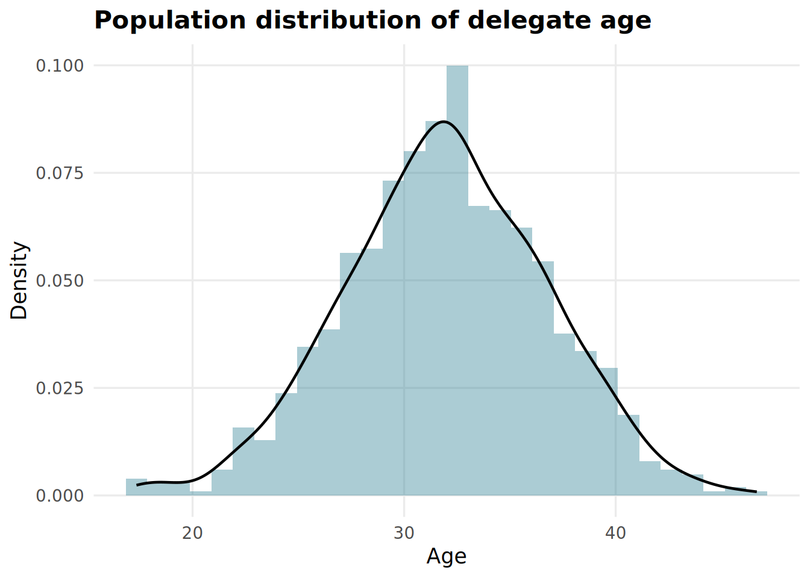
slice_sample() draws rows the tidyverse way — n = plus replace = mirrors rbinom()’s own arguments:
tibble(age = delegate_ages) |>
slice_sample(n = 30, replace = TRUE)# A tibble: 30 x 1
age
<dbl>
1 23.4
2 26.8
3 33.0
4 32.9
5 35.9
6 40.6
7 36.7
8 27.4
9 27.8
10 31.3
# i 20 more rowsdelegate_ages itself is kept as a plain vector rather than a tibble, though, so the trials below sample it with base R’s sample() instead — slice_sample() draws data-frame rows, sample() draws elements of a vector.
An organizer can only ever survey a batch at a time, never the whole population. The next two trials repeat that batch-survey process n_batches times each, at two different survey sizes, to see how the sampling distribution of the mean behaves — trial 1.a surveys 150 delegates per batch, trial 1.b surveys 400. expand_grid() lays out every (batch, participant) combination up front, group_by(batch) then draws each batch’s own resample within mutate() — no for loop needed, and each batch is printed in full first, before collapsing it down to sample means:
sample_size <- 150
trial_1a <- expand_grid(
batch = 1:n_batches,
participant = 1:sample_size
) |>
group_by(batch) |>
mutate(age = sample(delegate_ages, size = sample_size, replace = TRUE)) |>
ungroup() |>
mutate(label = str_glue("1.a: n = {sample_size} per survey"))
trial_1a |> head(100)# A tibble: 100 x 4
batch participant age label
<int> <int> <dbl> <glue>
1 1 1 31.8 1.a: n = 150 per survey
2 1 2 27.2 1.a: n = 150 per survey
3 1 3 32.3 1.a: n = 150 per survey
4 1 4 32.3 1.a: n = 150 per survey
5 1 5 45.5 1.a: n = 150 per survey
6 1 6 29.1 1.a: n = 150 per survey
7 1 7 39.2 1.a: n = 150 per survey
8 1 8 38.1 1.a: n = 150 per survey
9 1 9 33.0 1.a: n = 150 per survey
10 1 10 32.9 1.a: n = 150 per survey
# i 90 more rowssample_size <- 400
trial_1b <- expand_grid(
batch = 1:n_batches,
participant = 1:sample_size
) |>
group_by(batch) |>
mutate(age = sample(delegate_ages, size = sample_size, replace = TRUE)) |>
ungroup() |>
mutate(label = str_glue("1.b: n = {sample_size} per survey"))
trial_1b |> head(100)# A tibble: 100 x 4
batch participant age label
<int> <int> <dbl> <glue>
1 1 1 28.2 1.b: n = 400 per survey
2 1 2 32.1 1.b: n = 400 per survey
3 1 3 33.1 1.b: n = 400 per survey
4 1 4 33.5 1.b: n = 400 per survey
5 1 5 32.6 1.b: n = 400 per survey
6 1 6 31.9 1.b: n = 400 per survey
7 1 7 30.9 1.b: n = 400 per survey
8 1 8 38.1 1.b: n = 400 per survey
9 1 9 24.1 1.b: n = 400 per survey
10 1 10 37.7 1.b: n = 400 per survey
# i 90 more rowsOne sample mean per batch, for each survey size:
trials_1 <- bind_rows(trial_1a, trial_1b) |>
group_by(batch, label) |>
summarize(sample_mean = mean(age), .groups = "drop")trials_1 |>
ggplot(aes(x = sample_mean)) +
geom_histogram(aes(y = after_stat(density)), bins = 20, fill = course_primary, alpha = 0.4, color = NA) +
geom_density(linewidth = 0.8) +
facet_wrap(~label, ncol = 1) +
labs(
title = "Sampling distribution of the mean, by survey size",
x = "Sample mean",
y = "Density"
) +
theme_intror()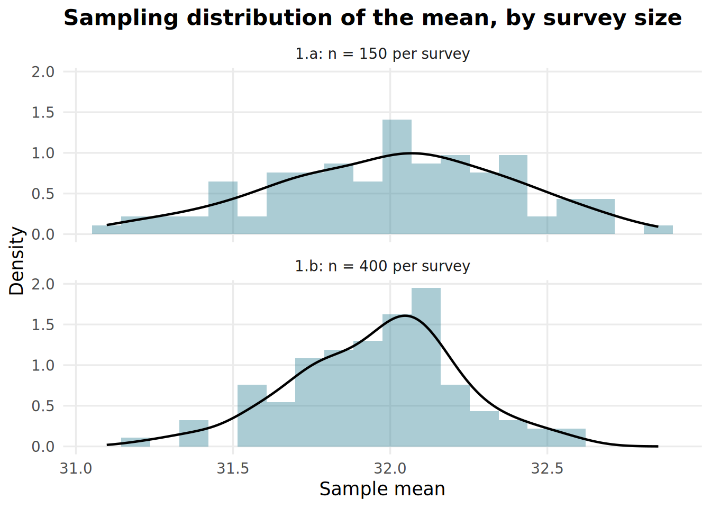
Directly comparing both trials’ actual mean/variance:
trials_1 |>
group_by(label) |>
summarize(
mean_sm = mean(sample_mean),
var_sm = var(sample_mean)
)# A tibble: 2 x 3
label mean_sm var_sm
<glue> <dbl> <dbl>
1 1.a: n = 150 per survey 32.0 0.144
2 1.b: n = 400 per survey 32.0 0.0690Against the CLT’s own prediction, , for each batch size:
tibble(population_variance = var(delegate_ages)) |>
mutate(
theoretical_1a = population_variance / 150,
theoretical_1b = population_variance / 400
)# A tibble: 1 x 3
population_variance theoretical_1a theoretical_1b
<dbl> <dbl> <dbl>
1 23.0 0.153 0.0574Larger samples per survey (400 vs. 150) tighten the sampling distribution around the true population mean — exactly why pollsters with bigger samples give more precise estimates.
Does the CLT still hold for a population that isn’t Normal at all? Delegates’ travel distance to reach the conference is a good example: most attend from nearby, a few travel intercontinental — modeled with a Gamma distribution (playground: probabilityplayground.com/gamma), shape controlling how peaked it is and scale stretching it out:
travel_distances <- rgamma(population_size, shape = 1.1, scale = 2000)
tibble(distance_km = travel_distances) |>
ggplot(aes(x = distance_km)) +
geom_histogram(aes(y = after_stat(density)), bins = 30, fill = course_primary, alpha = 0.4, color = NA) +
geom_density(linewidth = 0.8) +
labs(
title = "Population distribution of travel distance",
x = "Distance traveled (km)",
y = "Density"
) +
theme_intror()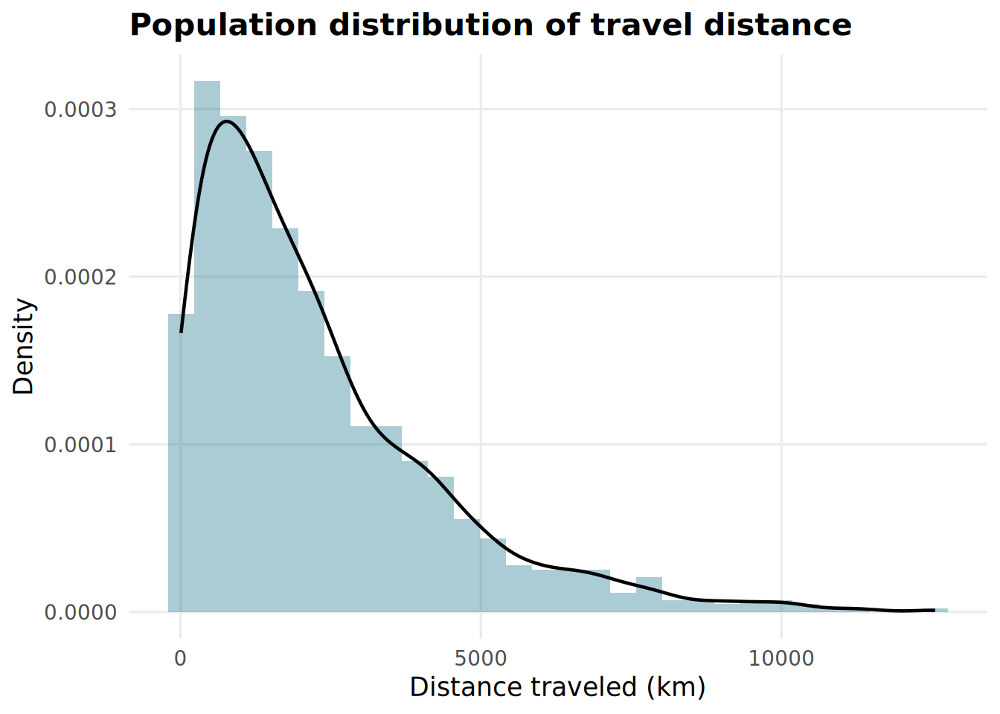
Clearly right-skewed — nothing like a Normal. Same approach as before, just resampling travel_distances instead of delegate_ages — trial 2.a at 100 per survey, trial 2.b at 400:
sample_size <- 100
trial_2a <- expand_grid(
batch = 1:n_batches,
participant = 1:sample_size
) |>
group_by(batch) |>
mutate(distance_km = sample(travel_distances, size = sample_size, replace = TRUE)) |>
ungroup() |>
mutate(label = str_glue("2.a: n = {sample_size} per survey"))
trial_2a |> head(100)# A tibble: 100 x 4
batch participant distance_km label
<int> <int> <dbl> <glue>
1 1 1 978. 2.a: n = 100 per survey
2 1 2 87.0 2.a: n = 100 per survey
3 1 3 2909. 2.a: n = 100 per survey
4 1 4 1131. 2.a: n = 100 per survey
5 1 5 2623. 2.a: n = 100 per survey
6 1 6 4901. 2.a: n = 100 per survey
7 1 7 2293. 2.a: n = 100 per survey
8 1 8 2193. 2.a: n = 100 per survey
9 1 9 2883. 2.a: n = 100 per survey
10 1 10 725. 2.a: n = 100 per survey
# i 90 more rowssample_size <- 400
trial_2b <- expand_grid(
batch = 1:n_batches,
participant = 1:sample_size
) |>
group_by(batch) |>
mutate(distance_km = sample(travel_distances, size = sample_size, replace = TRUE)) |>
ungroup() |>
mutate(label = str_glue("2.b: n = {sample_size} per survey"))
trial_2b |> head(100)# A tibble: 100 x 4
batch participant distance_km label
<int> <int> <dbl> <glue>
1 1 1 2849. 2.b: n = 400 per survey
2 1 2 1270. 2.b: n = 400 per survey
3 1 3 5363. 2.b: n = 400 per survey
4 1 4 349. 2.b: n = 400 per survey
5 1 5 3326. 2.b: n = 400 per survey
6 1 6 97.4 2.b: n = 400 per survey
7 1 7 911. 2.b: n = 400 per survey
8 1 8 4934. 2.b: n = 400 per survey
9 1 9 9623. 2.b: n = 400 per survey
10 1 10 860. 2.b: n = 400 per survey
# i 90 more rowstrials_2 <- bind_rows(trial_2a, trial_2b) |>
group_by(batch, label) |>
summarize(sample_mean = mean(distance_km), .groups = "drop")trials_2 |>
ggplot(aes(x = sample_mean)) +
geom_histogram(aes(y = after_stat(density)), bins = 20, fill = course_primary, alpha = 0.4, color = NA) +
geom_density(linewidth = 0.8) +
facet_wrap(~label, ncol = 1) +
labs(
title = "Sampling distribution of the mean, skewed population",
x = "Sample mean",
y = "Density"
) +
theme_intror()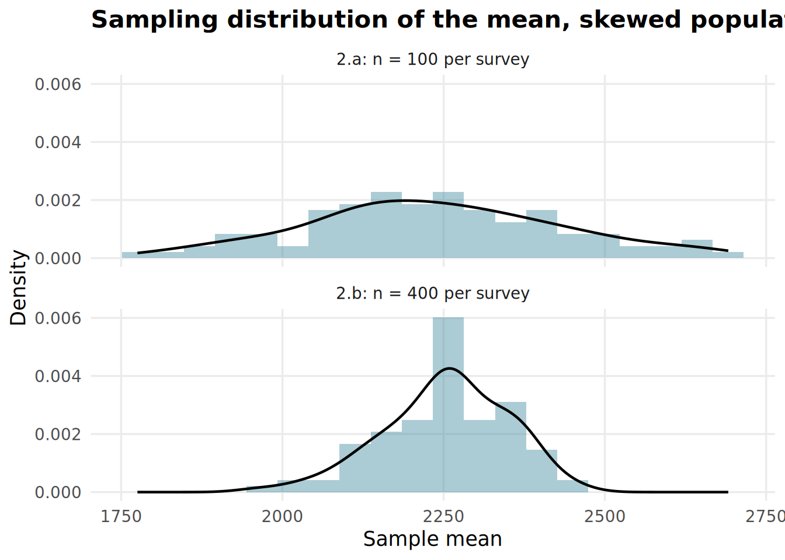
Directly comparing both trials again:
trials_2 |>
group_by(label) |>
summarize(
mean_sm = mean(sample_mean),
var_sm = var(sample_mean)
)# A tibble: 2 x 3
label mean_sm var_sm
<glue> <dbl> <dbl>
1 2.a: n = 100 per survey 2235. 38671.
2 2.b: n = 400 per survey 2253. 9290.The sampling distribution of the mean approaches Normal regardless of the population’s own shape — that’s the whole point of the theorem.
Both trials above resampled a single variable at a time. Sampling several variables together — one delegate’s age and travel distance drawn as a pair, not independently — preserves whatever relationship holds between them within a batch, the same way slice_sample() on a tibble resamples whole rows rather than each column separately:
delegates <- tibble(
age = rnorm(population_size, mean = 32, sd = 5),
distance_km = rgamma(population_size, shape = 1.1, scale = 2000)
)sample_size <- 100
trial_combined <- expand_grid(
batch = 1:n_batches,
participant = 1:sample_size
) |>
group_by(batch) |>
mutate(sample = slice_sample(delegates, n = sample_size, replace = TRUE)) |>
ungroup() |>
unnest(sample) |>
mutate(label = str_glue("Joint age + distance, n = {sample_size} per survey"))
trial_combined |> head(100)# A tibble: 100 x 5
batch participant age distance_km label
<int> <int> <dbl> <dbl> <glue>
1 1 1 40.6 2851. Joint age + distance, n = 100 per survey
2 1 2 35.6 4429. Joint age + distance, n = 100 per survey
3 1 3 32.5 79.1 Joint age + distance, n = 100 per survey
4 1 4 35.3 2394. Joint age + distance, n = 100 per survey
5 1 5 37.4 45.0 Joint age + distance, n = 100 per survey
6 1 6 35.6 2284. Joint age + distance, n = 100 per survey
7 1 7 34.3 660. Joint age + distance, n = 100 per survey
8 1 8 30.0 1017. Joint age + distance, n = 100 per survey
9 1 9 31.9 1693. Joint age + distance, n = 100 per survey
10 1 10 24.4 2125. Joint age + distance, n = 100 per survey
# i 90 more rowsA Binomial count is itself a sum of independent Bernoulli trials — by the CLT we just saw, that sum’s own distribution should look increasingly Normal as grows, the same logic as a sampling distribution of a mean. That means a Binomial’s probabilities can be approximated with a Normal distribution matched on mean and variance — useful whenever an exact pbinom() calculation would be impractical, and the reason this approximation is worth knowing rather than always just calling pbinom() directly. Back to the summit scenario:
n_invited <- 120
p_attend <- 0.85
mean_attend <- n_invited * p_attend
sd_attend <- sqrt(n_invited * p_attend * (1 - p_attend))In general, the Normal approximation replaces an exact Binomial tail probability with the matching Normal’s:
100) approx P(X > 100), quad X tilde.op cal(N)(n p, n p (1-p))">
Concretely, pnorm() computes that Normal probability directly off the Normal CDF itself — the same from this session’s Normal-CDF formula above:
100) = 1 - F^upright("Norm")(100; n p, n p (1-p))">
1 - pnorm(q = 100, mean = mean_attend, sd = sd_attend)[1] 0.695433pbinom() computes that same right-tail probability exactly instead — straight off the Binomial CDF itself, no Normal approximation involved:
100) = 1 - F^upright("Bin")(100; n, p)">
1 - pbinom(q = 100, size = n_invited, prob = p_attend) # close to the normal approx above![1] 0.6586167The two match closely — closely enough that overlaying the exact Binomial pmf (dbinom() at every integer ) directly on top of its fitted Normal curve — , evaluated at this scenario’s own mean_attend/sd_attend — makes the approximation’s quality visible at a glance: the same curve whose right tail beyond 100 pnorm() just integrated above.
binom_pmf <- tibble(
attendees = 0:n_invited,
pmf = dbinom(attendees, n_invited, p_attend)
)
normal_pdf <- tibble(
attendees = seq(0, n_invited, by = 0.01),
density = dnorm(attendees, mean_attend, sd_attend)
)
binom_label <- str_glue("Binomial({n_invited}, {p_attend}) pmf -- dbinom()")
normal_label <- str_glue("Fitted N({mean_attend}, {round(sd_attend^2, 1)}) -- dnorm()")
ggplot() +
geom_segment(
data = binom_pmf, aes(x = attendees, xend = attendees, y = 0, yend = pmf),
color = "grey75", linewidth = 0.3
) +
geom_point(data = binom_pmf, aes(x = attendees, y = pmf, color = binom_label), size = 1.2) +
geom_line(data = normal_pdf, aes(x = attendees, y = density, color = normal_label), linewidth = 0.8) +
scale_color_manual(name = NULL, values = set_names(c("#B8860B", course_primary), c(binom_label, normal_label))) +
labs(
title = "Binomial pmf vs. its Normal approximation",
x = "Delegates showing up",
y = "Density / probability"
) +
theme_intror()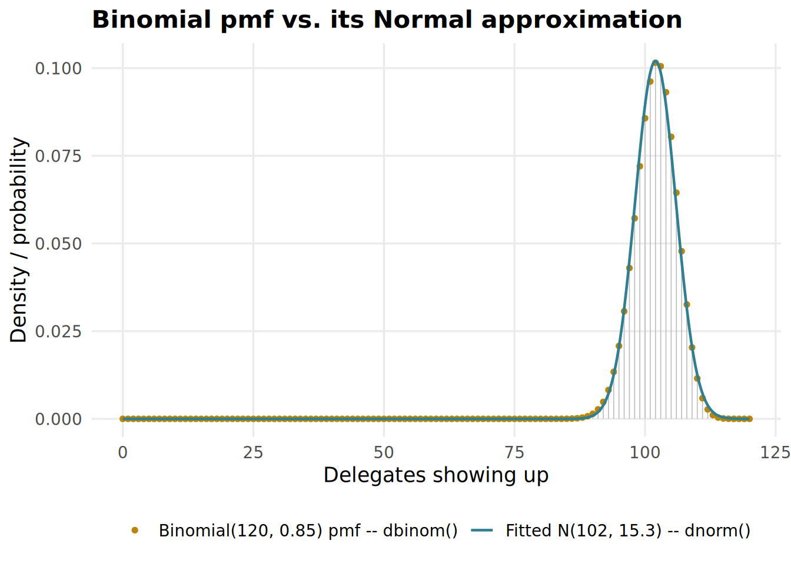
Comparing two conferences’ attendance only makes sense relative to each conference series’ own typical turnout — different conference series have wildly different baselines. The z-score formula standardizes any value against its own distribution’s mean and sd:
Rather than typing each series’ historical mean/sd in by hand, simulate a run of past years for each series and read mean()/sd() straight off the data — series A has historically run smaller (mean 60, sd 20), series B larger (mean 120, sd 40):
set.seed(1234)
series_a <- rnorm(1000, mean = 60, sd = 20)
series_b <- rnorm(1000, mean = 120, sd = 40)Conference A drew 90 delegates this year — which of the two had the stronger year, relative to its own history? Standardized against series A’s own mean()/sd():
mean_a <- mean(series_a)
sd_a <- sd(series_a)
conf_a_attendance <- 90
z_a <- (conf_a_attendance - mean_a) / sd_a
z_a[1] 1.530672Conference B drew 160 delegates this year. Standardized against series B’s own mean()/sd():
mean_b <- mean(series_b)
sd_b <- sd(series_b)
conf_b_attendance <- 160
z_b <- (conf_b_attendance - mean_b) / sd_b
z_b[1] 1.004381Conference A comes out roughly 1.5 standard deviations above its own series’ average, Conference B only about 1.0 — so A had the stronger year relative to its own history, despite drawing fewer delegates in absolute terms. (Only “roughly,” since series_a/series_b are themselves simulated samples — mean()/sd() only approximate the true 60/20 and 120/40 they were drawn from, same estimation idea as the CLT trials above.) Z-scores are directly interpretable as “how many standard deviations above/below the mean.” Visually, each conference sits within its own series’ distribution — A’s dashed line falls further into its own tail than B’s, even on a smaller absolute scale. Each conference’s own curve, built separately, then combined:
conf_a_curve <- tibble(
x = seq(mean_a - 3 * sd_a, mean_a + 3 * sd_a, length.out = 200),
density = dnorm(x, mean = mean_a, sd = sd_a),
conference = "A",
attendance = conf_a_attendance
)
conf_b_curve <- tibble(
x = seq(mean_b - 3 * sd_b, mean_b + 3 * sd_b, length.out = 200),
density = dnorm(x, mean = mean_b, sd = sd_b),
conference = "B",
attendance = conf_b_attendance
)
standardize_curves <- bind_rows(conf_a_curve, conf_b_curve)
standardize_curves# A tibble: 400 x 4
x density conference attendance
<dbl> <dbl> <chr> <dbl>
1 -0.372 0.000222 A 90
2 0.229 0.000243 A 90
3 0.831 0.000266 A 90
4 1.43 0.000290 A 90
5 2.03 0.000317 A 90
6 2.63 0.000345 A 90
7 3.24 0.000376 A 90
8 3.84 0.000409 A 90
9 4.44 0.000445 A 90
10 5.04 0.000483 A 90
# i 390 more rowsstandardize_curves |>
ggplot(aes(x = x, y = density)) +
geom_line() +
geom_vline(aes(xintercept = attendance), color = course_primary, linetype = "dashed") +
facet_wrap(~conference, scales = "free", labeller = label_both) +
labs(
title = "Each conference vs. its own series",
x = "Attendance (delegates)",
y = "Density"
) +
theme_intror()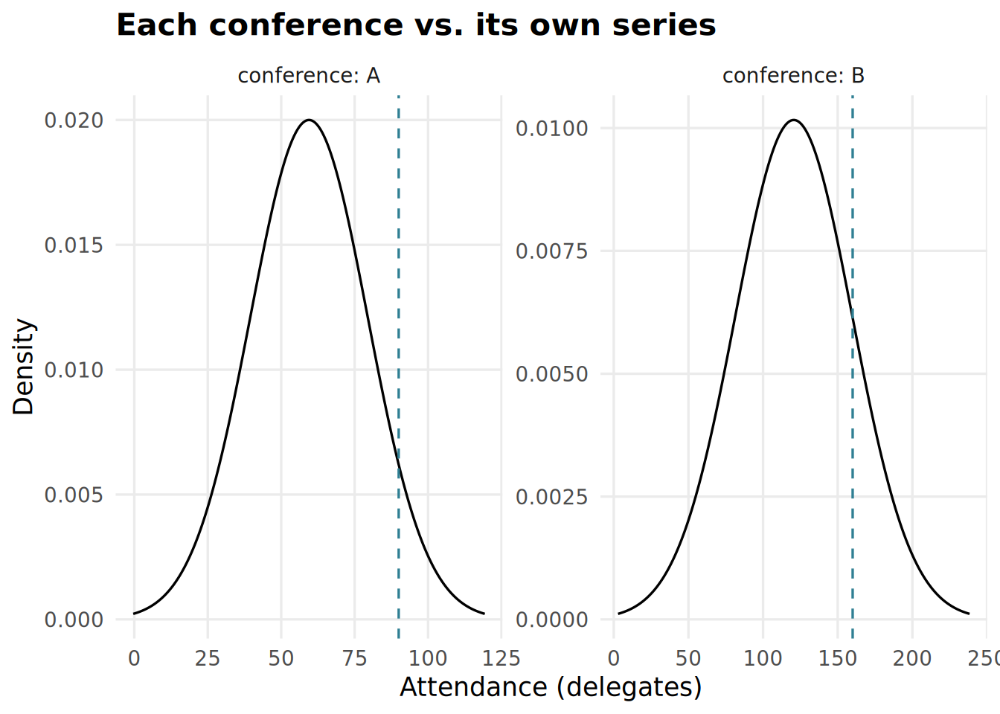
Your task: what’s the probability of overflowing a 100-seat venue if the summit chair caps invitations at 110 instead of 120 (same 85% attendance rate)?
[1] 0.02442528Your task: two more conferences, two more series — using a tibble and mutate(), compute z-scores to find which one had the stronger year relative to its own history: Conference C (45 delegates, series average 30, sd 10) or Conference D (210 delegates, series average 150, sd 50)?
# A tibble: 2 x 5
conference attendance series_mean series_sd z
<chr> <dbl> <dbl> <dbl> <dbl>
1 C 45 30 10 1.5
2 D 210 150 50 1.2Your task: repeat trial 1.b (the Normal delegate-age population, n = 400 per survey) at n = 900 per survey. Does the sampling distribution get tighter still, and does var(trial) land close to the theoretical var(pop)/900?
# A tibble: 1 x 1
var_sm
<dbl>
1 0.0256# A tibble: 1 x 2
population_variance theoretical_var
<dbl> <dbl>
1 23.0 0.0255